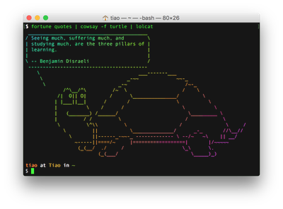

Creating custom (Unix) fortunes
Like others, I include fortune in my .bash_profile so that I am greeted with a random, witty and thought-provoking epigram upon starting a new shell session. Eventually, however, I found most of the epigrams to be mostly trite and vapid, and quickly grew tired of them. Instead of tinkering with the probabilities of sampling from the various datafiles available, I decided to roll with my own epigram datafile.
People often say that motivation doesn't last. Well, neither does bathing - that's why we recommend it daily.
—Zig Ziglar
I have a collection of favorite quotes scattered between various places - Evernote, Goodreads, Reddit Saves, Kindle Annotations, etc. Usually, when I add something to that collection, it's probably the last I'll ever see of it. Recently, I had the idea of incorporating the review and curation of the collection as part of my GTD Weekly Review (or perhaps more appropriately, some kind of "Bigger Picture" Review). In addition to this, I thought it would be beneficial to see some subset of epigrams from my collection on a day-to-day basis, ensuring there is a nonzero (albeit low) probability of eventually encountering everything in my collection.
Getting Started
First, I installed fortune with Homebrew:
$ brew install fortune
After installing, we should be able to find the default datafiles in /usr/local/share/games/fortunes/:
$ ls /usr/local/share/games/fortunes/
Instead of simple plaintext files, fortune only works on files with formats that allow random access of its strings. Such as datafiles can be easily created with strfile, which "reads a file containing groups of lines separated by a line containing a single percent '%' sign and creates a data file which contains a header structure and a table of file offsets for each group of lines."
So now let's create a text file with the properties prescribed above, e.g.:
$ touch quotes $ cat >> quotes Seeing much, suffering much, and studying much, are the three pillars of learning. -- Benjamin Disraeli % While one person hesitates because he feels inferior, the other is busy making mistakes and becoming superior. -- Henry C. Link % When nothing seems to help, I go and look at a stonecutter hammering away at his rock, perhaps a hundred times without as much as a crack showing in it. Yet at the hundred and first blow it will split in two, and I know it was not that last blow that did it, but all that had gone before. -- Jacob A. Riis %
Next we create the datafile with strfile:
$ strfile quotes "quotes.dat" created There were 3 strings Longest string: 310 bytes Shortest string: 106 bytes
and now we are able to randomly access a group of lines with fortune:
$ fortune quotes Seeing much, suffering much, and studying much, are the three pillars of learning. -- Benjamin Disraeli
It is important to note that when we specify quotes as the argument to fortune, it will look for the datafile quotes.dat, in addition to the plaintext file quotes.
Just to amuse ourselves, we can pipe through to a number of humorous commands/ utilities (cowsay, lolcat):
$ fortune quotes | cowsay -f turtle | lolcat
{kind=link}
Alright let's not get carried away here... I created a repo on Github (ltiao/fortunes) to centralize, manage, curate and source control my collection of epigrams. This repo can contain several datafiles, so I have the option of logically grouping epigrams into various datafiles, and get a random epigram from across all of the datafiles:
$ git clone https://github.com/ltiao/fortunes $ fortune fortunes [...]
Furthermore, I have the option of tweaking probabilities of sampling from a particular datafile, and more. I shall defer tinkering with advanced features after I've built up my collection. For the time being, the relevant line in my .bash_profile will simply be the one above.
Adding Entries
The workflow for adding entries would look something like this:
$ cat >> quotes Employ your time in improving yourself by other men's writings so that you shall come easily by what others have labored hard for. -- Socrates % $ strfile quotes [...] $ git commit -am 'Added quote' [...] $ git push origin master [...]
Future Work
At some point, I will probably to write a spider to crawl sources such as Amazon Kindle Highlights, dump the highights into a plaintext file in the prescribed format, automatically generate the datafile with strfile and use that as my fortune. Another interesting source is tweets, filtered by user or hashtag, or even a snapshot of the real-time live Twitter feed.
Comments
Comments powered by Disqus